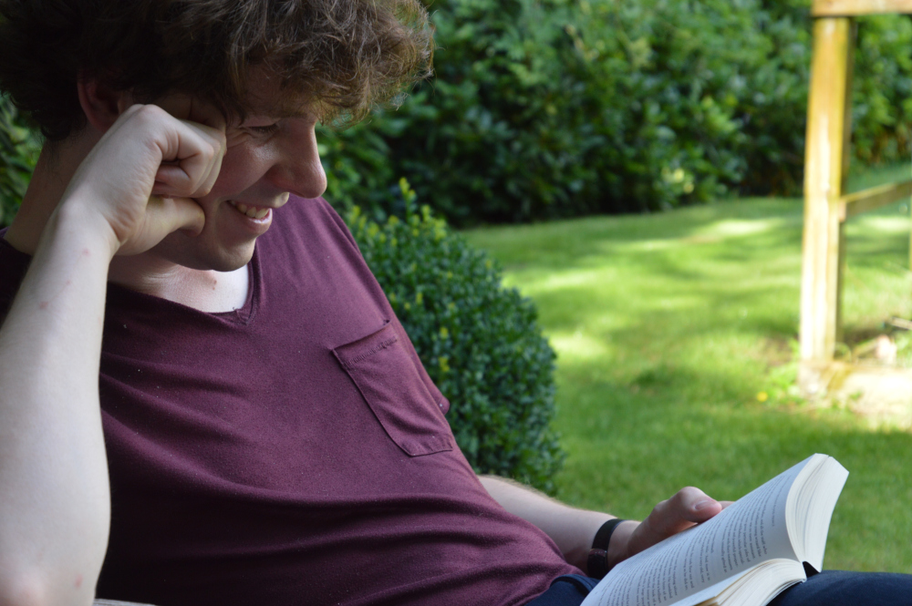

Someplace, sometime ago
Growing up, I found that I am mainly curious about two things: the stories of other people and the power of computation. Over time these interests have pushed me in many different directions, eventually pushing me into what could be described as "Computational Social Science". Right now, I study Dutch union dissolution behaviour at NIDI. This PhD position allows me to grow, acquiring more knowledge about Social Science, but also use my acquired knowledge of Computational Science and Dutch society so far. However, more importantly, it allowed me to connect with other amazing people as well - this road has definitely been a fun challenge so far!

With kind regards,
Willem
Vermeulen